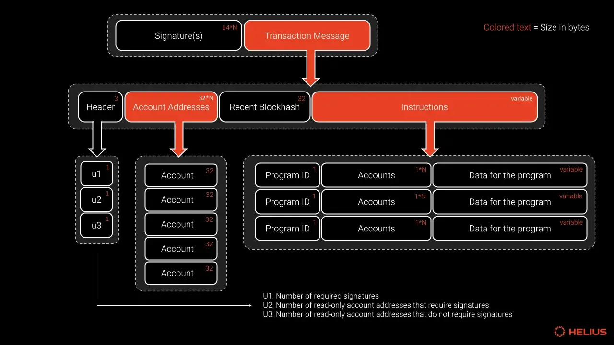

솔라나 트랜잭션 (Transaction)
트랜잭션은 솔라나 블록체인의 상태를 변경하기 위한 서명된 지시사항들의 묶음입니다. 단순한 토큰 전송부터 복잡한 스마트 컨트랙트 실행까지 모든 활동은 트랜잭션을 통해 이루어집니다.

솔라나의 트랜잭션은 여러 구성요소로 이루어져 있습니다.
- 헤더 (Header): 트랜잭션에 서명해야 하는 계정 주소 목록에 대한 참조를 포함합니다.
- 계정 주소 목록 (Account Addresses): 트랜잭션 동안 읽거나 쓸 모든 계정 목록입니다. 이 목록을 사전에 명시하는 것은 솔라나의 핵심적인 특징으로, 이를 통해 병렬 처리가 가능해집니다.
- 최근 블록해시 (Recent Blockhash): 중복되거나 오래된 트랜잭션을 방지하는 데 사용됩니다. 약 1분 후에 만료됩니다.
- 명령어 (Instructions): 트랜잭션의 핵심 로직입니다. 전송, 발행, 소각 등 특정 작업을 나타내며, 실행할 프로그램, 계정, 데이터 등을 지정합니다.
솔라나는 트랜잭션마다 참조될 모든 계정을 데이터 안에 미리 포함합니다.
덕분에 노드는 실행 전에 관련 계정을 한눈에 파악할 수 있고, 사용자는 트랜잭션을 보낼 때 필요한 계정을 모두 지정해야 합니다. 이 설계 철학은 솔라나 프로그램(스마트 컨트랙트)을 작성할 때 특히 두드러집니다.
이처럼 계정 충돌을 사전에 제거해 병렬 처리가 극대화되면서, 솔라나는 다른 체인 대비 압도적인 TPS를 달성할 수 있습니다.
개발자 워크플로우 요약: 솔라나 프로그램을 작성할 때, 개발자는 1) Instruction을 호출하는 트랜잭션에 필요한 모든 계정을 지정하고, 2) 그 계정들을 대상으로 원하는 로직을 실행하는 Instruction(명령)을 정의하는 흐름을 따릅니다.
Tx 수수료
SOL의 가장 작은 단위를 "램포트(lamport)"라고 하며, 이는 SOL의 10억분의 1에 해당합니다 (비트코인의 "사토시"와 유사).
트랜잭션 실행 비용은 기본 수수료와 우선순위 수수료 두 부분으로 나뉩니다.
- 기본 수수료 (Base Fee): 트랜잭션의 복잡성과 관계없이 서명당 부과되는 고정 비용입니다 (보통 서명당 5,000 램포트).
- 우선순위 수수료 (Prioritization Fee): 기술적으로는 선택 사항이지만, 네트워크 수요가 높을 때 블록에 포함될 가능성을 높이기 위해 사용됩니다. 검증자에게 트랜잭션을 처리하도록 경제적 인센티브를 제공하는 역할을 합니다.
총 수수료 = 우선순위 수수료 + 기본 수수료
(우선순위 수수료 = 컴퓨팅 유닛 가격 × 컴퓨팅 유닛 한도)
솔라나는 매우 낮은 수수료($0.00025 평균)와 빠른 처리 속도(65,000+ TPS)를 자랑합니다. 수수료는 우선순위(Priority)와 컴퓨팅 자원 사용량에 따라 결정되며, 로컬 수수료 시장(Localized Fee Market)을 통해 특정 스마트 컨트랙트에 대한 수요가 전체 네트워크의 수수료에 영향을 주지 않도록 합니다.